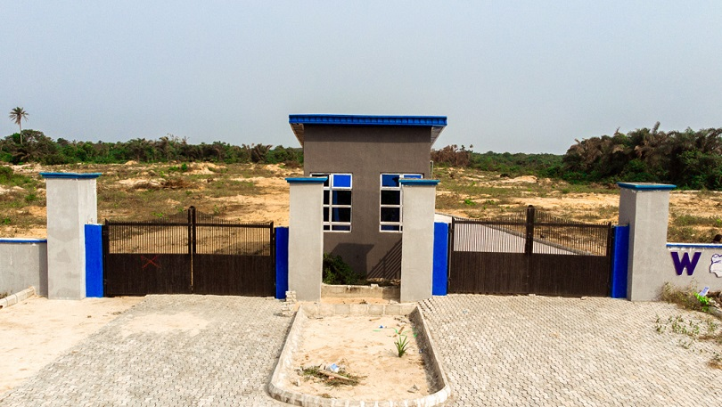
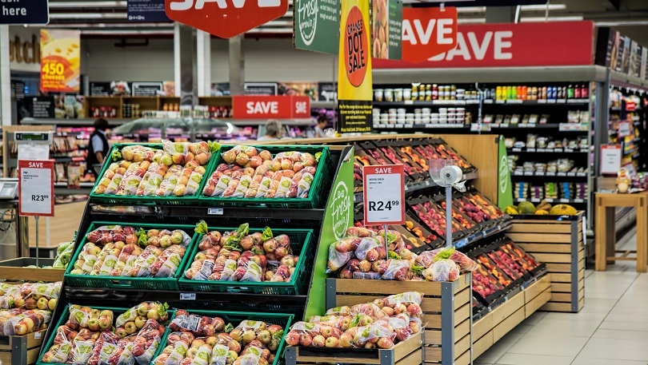

The objective is to create a robust predictive model using the provided dataset. And to analyze various factors that impact house prices, identify meaningful patterns,
and build a model that can generate reliable price predictions.
The dataset specifies farming system characteristics that can help inform about the importance of each system for a country’s agricultural production and its ability to
cope with short and long-term climate changes or extreme weather events.
The projects focused on leveraging predictive modeling and data analytics to assess the likelihood of loan default. These projects aim
to provide insights into risk assessment, enabling informed decision-making.
MTN Group is a South African multinational corporation and mobile telecommunications provider. It operates in 21 countries across Africa and the Middle East, serving 292 million subscribers as of December 20221.
In the 'Titanic Survival Prediction' portfolio, I employ machine learning techniques to construct a predictive model determining the likelihood of passengers surviving the historic Titanic shipwreck.

Using Time series forecasting to forecast store sales on data from Corporación Favorita, a large Ecuadorian-based grocery retailer.
To build a model that more accurately predicts the unit sales for thousands of items sold at different Favorita stores.